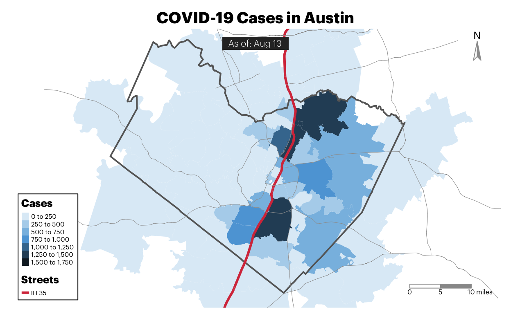

| Number of People Tested for SARS-CoV-2 in Texas, By Lab Type | ||
|---|---|---|
| Source: Texas Department of State Health Services | As of August 10th at 3:00PM CST1 | ||
| Location | Tests Processed | |
| Total People Tested in Texas by Public Health Lab | 122.02K | |
| No. Tests by Commercial labs* | 4.49M | |
| Total Tests | — | 4,611,777 |
| *Unable to deduplicate figures for Commercial labs. | ||
| 1 Data: From the 'Accessible Dashboard Data' File, under the 'Tests' tab. | ||
Approaching the six-month mark of COVID-19 in Texas, one of the more common topics of discussion I hear is what the effects of coronavirus on our communities reveals about the world that existed before. And where we knew little about COVID-19 back in March, since that time a lot has been documented about what increases the risk of not only becoming severely ill, but also what increases the risk of being exposed to COVID-19 before you even get sick—such as having a job that requires you to be physically present for work (as opposed to working remotely from home) or not having access to a reliable internet connection.
That said, I want to explore some of these things in a series of blog posts–to see who is not only getting COVID, but also where folks are most at risk of being exposed to COVID and where they’re most at risk of not bouncing back. The trouble in answering these questions is that getting good data is difficult and, once you have it, organizing the data in a way that is useful and meaningful for others is even harder. So, I’m going to pace myself and search for datasets that can inform our conversation. For the purposes of these blog posts, I’m just going to focus on looking at the city-wide data in Austin—where I live—because I know all the data exists with regards to the questions I have pulled together. If you have questions, I invite you to ask them as well and I’ll do my best to find data that can help provided some meaningful insight.
Who is getting COVID-19 in Austin?
Before we do any exploration of the more complicated questions identified, the best starting point would be exploring where COVID is occuring most in Austin. So let’s look at that before digging into other questions and start by pulling Austin Public Health’s data—which organizes cases at the zip code level and updated frequently—to map out cases. We don’t have access to where deaths occur most often, but cases at the zip code level is more than you can find in a lot of places. So we’ll use what we have.
Here’s where cases are occurring most often right now:

The first thing to notice is that cases are largely consolidated east of I-35. Without additional context, it’s worth wondering what role an interstate plays in shielding folks on one side from Coronavirus. With additional context about how the city was intentionally segregated through a “master plan” developed in 1928 that used I-35 as a form of physical division, it’s worth paying attention to the dynamics of I-35 and including it as a geographical marker throughout future analyses.
In the next few blog posts, I’ll be writing about risk + resilience. Originally, I wanted to include everything here, but the charts and analysis became pretty extensive. For fear of exhausting everyone, including myself. We’ll take these questions piece by piece.
Next Blogpost: Who should be most worried about getting COVID?
Note about this series: If you’re interested in asking specific questions to explore in this, reach out to me via Facebook or Twitter and I’ll do my best to find data that can help provide some kind of meaningful answer.
Where can I find the code for this blog? Once I clean up the mess in this repo, I’ll make it public on github. For now, I’m happy to share individual the Rmarkdown file used to produce each article.
TLDR | Why not do this at the statewide level?
Originally, I considered focusing these articles at the statewide level for Texas, but I kept running into issues around finding data that could meaningfully answer some of my questions. The reasons for this are many, but some of the state’s existing COVID-19 data cannot be aggregated at anything beyond the statewide level for reasons outside of their control.
Example - Test Positivity
For example, county-level test positivity is one of those things that has been difficult because COVID-19 lab testing has largely been decentralized, with over 97% of tests being conducted in commercial labs. Consequently, this means the state has to then coordinate data from over 4 million tests conducted outside of state testing labs.
And given that these commercial labs aren’t actually part of a state agency, this means they have to learn new reporting rhythms and do work that, perhaps, they didn’t plan for or know they needed to do–such as keep all of the positives and negatives for each county, record those in a database by the county of origin, deduplicate them by the person who got the test, and then share all of that information back to the state in a manner that is uniform with all the other private labs in the state.
That said, not being able to compare how much a county is testing with how much they’re testing positive weakens a potential analysis and limits how much you can explore the dynamics between risk factors and things like test positivity.
Example - Demographic Data
Another example of this information is demographic data about cases and fatalities. That information also doesn’t exist broken down by county–sometimes due to HIPAA requirements.
So if you wanted to analyze geographic COVID-19 trends between counties across multiple pieces of data such as demographic, known risk-factors, and other trends, you’d have a hard time accomplishing that because it currently doesn’t exist.
For that reason, I’ve chosen to just focus on using city-level data given that cities tend to have better access to local information about their communities.
Photo Credit
Photo by Ryan Magsino on Unsplash